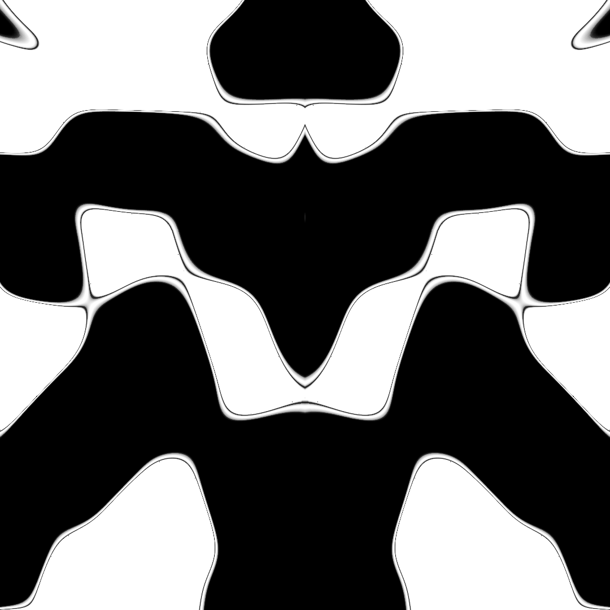
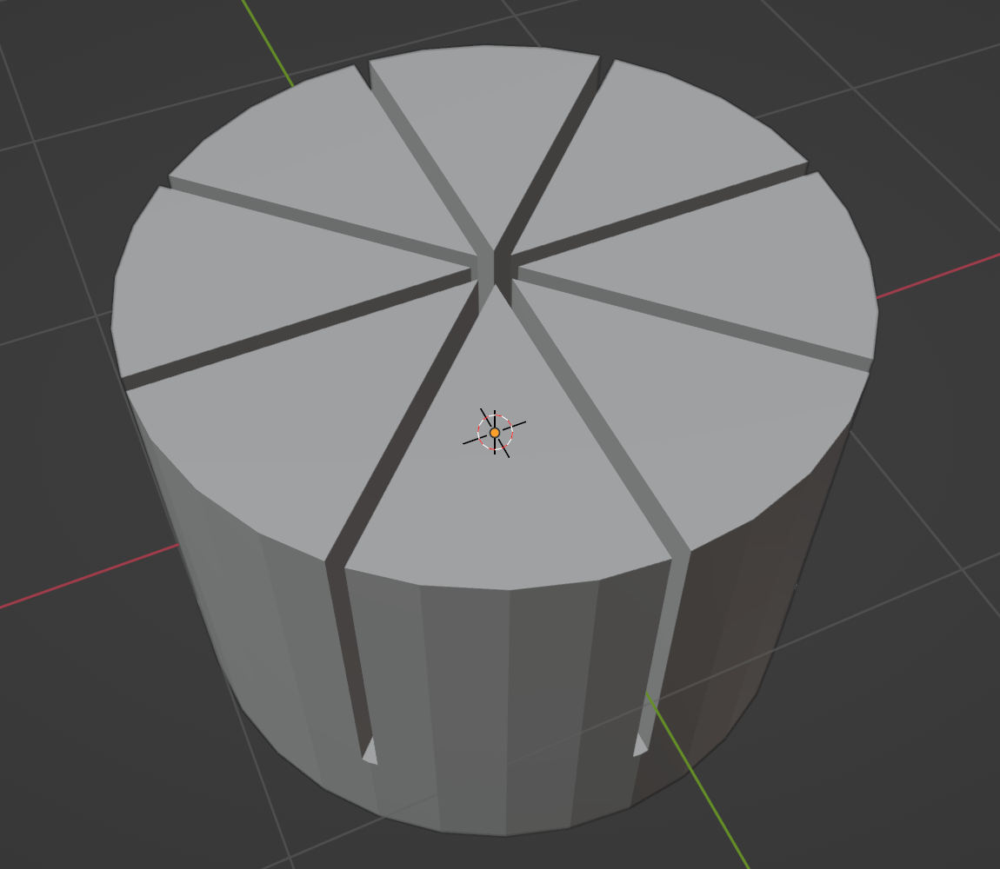
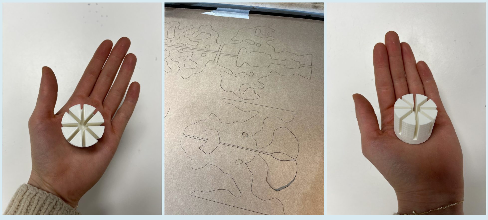
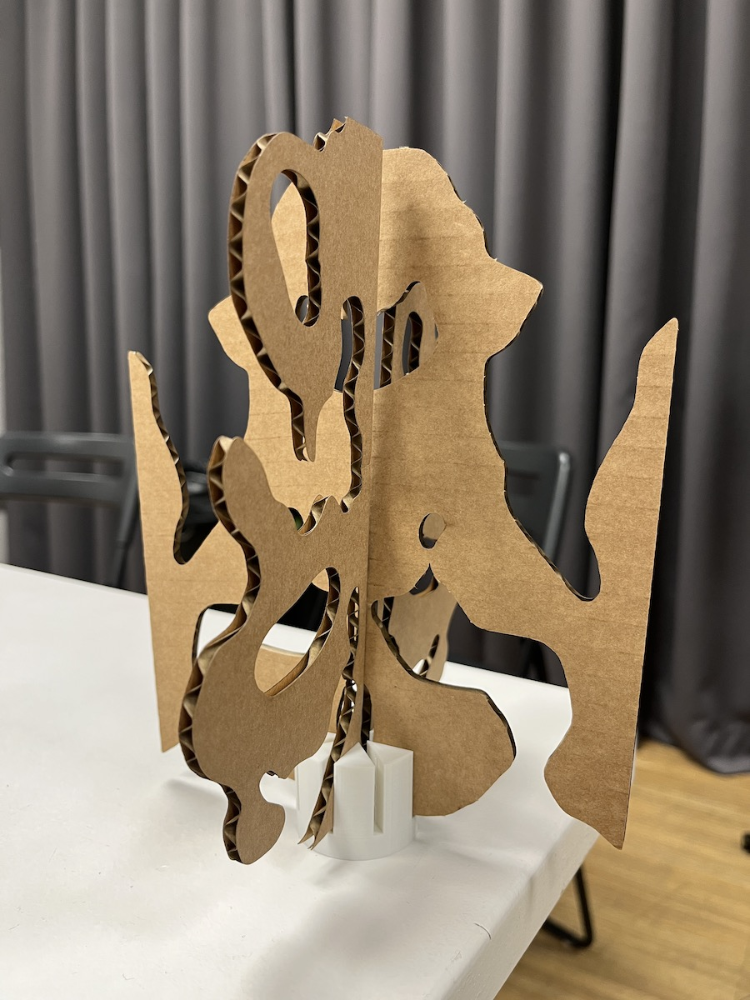

Experimenting with Generative Rorschach inkblots.

touchdesigner explanation + following prototypes
Since I have decided to tie my weekly Fabacademy assignments to my design interventions, I wanted to figure out how I could use 3D printing in my favor. I didn’t want to 3D print something just for the sake of it, creating unnecessary waste. I began brainstorming ideas on how I could come up with an interesting project idea.
After browsing pinterest for inspiration, I got various ideas but none of them inspired me fully. A jewellery holder, a cool lamp shade… It all seemed like it was done before.
I wanted to create something that could be used in an interactive way, possibly with lights or projections. Since I recently added Rorsauch’s ink blots to my Design space board, I wondered what they could look like if made in 3D, or from generative code. If you want to see the results from using noise + math to create computer-made inkblots, you can find it here.
I decided to explore this interest, so I prototyped a what a 3D model would look like if it had generative inkblots on various axis. The idea was to create an 3D object that had interesting shapes on which you could project a light. Through the shadows it cast, you could then ask people how they interpret them. Aa a bonus, you would spin it around, which would create a wide variety of shapes morphing in and out of themselves.
However, I realised that in the assignment requirements we were not allowed to print anything over 7cm. This was a huge bummer, so I chose to reframe my idea. What if I could incorporate laser cutting in this project?
After talking to Chris about the possibilities this project could have, I got a few new ideas as to how to continue this project. I recreated the inkblots in 2D which could be laser cut panels and designed a 3D structure that would hold the various pieces in place, allowing them to spin on the center axis.
These were the laser cut pieces I designed, creating cuts based around my favourite inkblots I made using Touchdesigner. I exported them as .ai files and followed the usual laser cut process to cut cardboard.
This was the "cap" I modelled in blender to keep the laser cut slices in place.


This is the final result:

Upcoming ideas: shadow of the collective
The process of making the 3D inkblots.
The community I want to involve
Upcoming ideas: Artificial Constellations
In the meanwhile, I've been working with Chris to finalise the Artificial Constellations
Figma project with Chris.